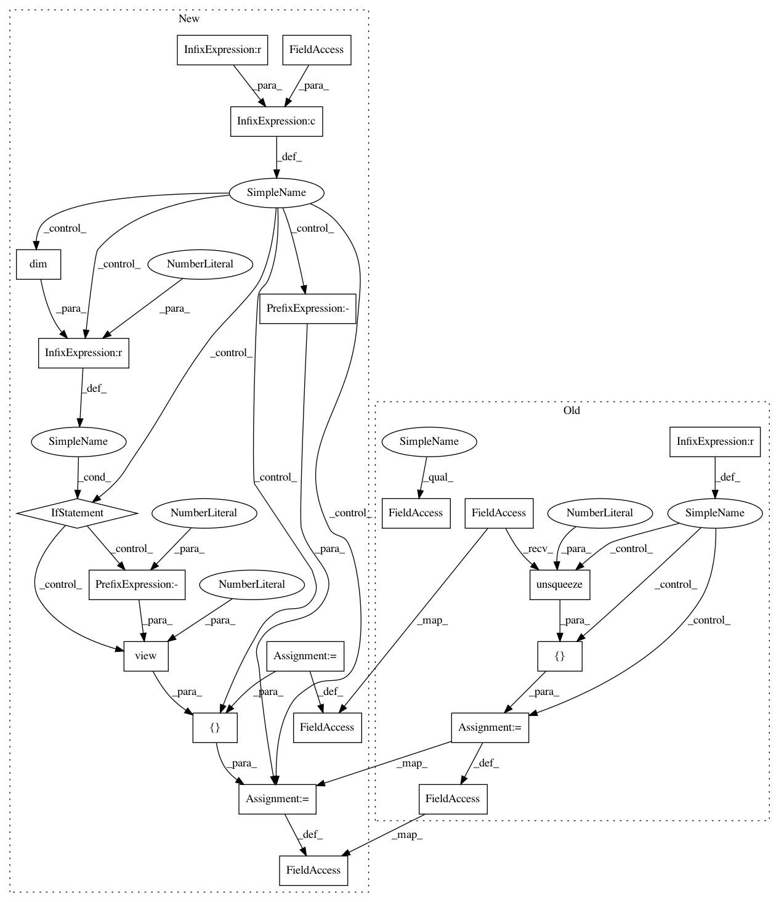

51b53dcbab8ec7ab0b6e8a64284a919db2d2254a,torch_geometric/transform/local_cartesian.py,LocalCartesian,__call__,#LocalCartesian#Any#,8
Before Change
weight *= 1 / (2 * max_e.unsqueeze(1))
weight += 0.5
if data.weight is None:
data.weight = weight
else:
data.weight = torch.cat([weight, data.weight.unsqueeze(1)], dim=1)
return data
After Change
cartesian = pos[col] - pos[row]
tmp, _ = scatter_max(cartesian.abs(), row, 0, dim_size=pos.size(0))
cartesian /= 2 * tmp.max(dim=1, keepdim=True)[0][row]
cartesian += 0.5
if pseudo is not None and self.cat:
pseudo = pseudo.view(-1, 1) if pseudo.dim() == 1 else pseudo
cartesian = cartesian.type_as(pseudo)
data.weight = torch.cat([pseudo, cartesian], dim=-1)
else:
data.weight = cartesian
return data
In pattern: SUPERPATTERN
Frequency: 3
Non-data size: 21
Instances
Project Name: rusty1s/pytorch_geometric
Commit Name: 51b53dcbab8ec7ab0b6e8a64284a919db2d2254a
Time: 2018-05-08
Author: matthias.fey@tu-dortmund.de
File Name: torch_geometric/transform/local_cartesian.py
Class Name: LocalCartesian
Method Name: __call__
Project Name: rusty1s/pytorch_geometric
Commit Name: 1697ad9a5cb50f61583735f8e442f80fc72a473c
Time: 2018-05-12
Author: matthias.fey@tu-dortmund.de
File Name: torch_geometric/transform/polar.py
Class Name: Polar
Method Name: __call__
Project Name: rusty1s/pytorch_geometric
Commit Name: 1697ad9a5cb50f61583735f8e442f80fc72a473c
Time: 2018-05-12
Author: matthias.fey@tu-dortmund.de
File Name: torch_geometric/transform/spherical.py
Class Name: Spherical
Method Name: __call__